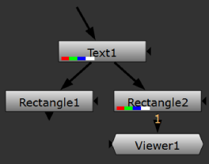
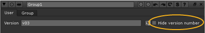
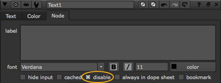

Using Nuke’s Export gizmo command, you can export a group of nodes and explicitly control which controls may be edited by the artists to ensure the processes within the gizmo are consistently applied.
To create a gizmo:
| 1. | Select the nodes you want to include in the gizmo. |
| 2. | Select Other > Group from the Toolbar (or press Ctrl/Cmd+G) to group the nodes. |
| 3. | You may want to rename the group by entering a new name in the Group properties panel title field. This step is optional, and has no effect on the saved gizmo. However, it is often a good idea to give the Group the same name you intend to use for the gizmo. |
| 4. | To control which controls the artists can adjust, follow the instructions under Managing the Gizmo Controls below. |
| 5. | Click the export as gizmo button. |
| 6. | In the file browser that appears, click Home. Type .nuke/ after the path displayed at the bottom of the file browser. |
| 7. | Enter a name after the path, and append a .gizmo extension after the name. This is the name of the command that is written to any saved script that’s using the gizmo. It’s a good idea, and common practice, to begin the name with a capital letter, because Nuke uses this as an indication that the command is a node or a gizmo. |
| 8. | Click Save. |
NOTE: Nuke does not allow you to Overwrite and Save as gizmos by default, without copying the gizmo to a Group. If you want to allow this behavior, so artists don't need to copy a gizmo before editing it, set the NUKE_ALLOW_GIZMO_SAVING environment variable to 1. See Setting Environment Variables for more information.
You can add controls to your gizmo (which at this point is just a Group node) in two different ways:
• by picking and editing a control from the controls that by default exist for the nodes inside your Group node. For example, if the Group node contains a Grade node, you can add any of the Grade node controls to your gizmo properties panel.
• by adding a control you have created yourself to your gizmo properties panel.
| 1. | Right-click on the dark gray background of the Group properties panel and select Manage User Knobs. The following dialog opens. |

| 2. | To pick a control you want to give the users control of, click on the Pick button. This opens a dialog that lists all the nodes that the group contains. |
Expand the list items as necessary to see the controls you can include in the gizmo controls. Select a control and click OK. You can also select multiple controls by Ctrl/Cmd+clicking on them, or pick a range of controls by Shift+clicking.
At this point, a new tab called User appears in the Group properties panel. The control you selected has been added to this tab. In our example, we selected the size control of the Text node.
The control has also been added to the Manage User Knobs dialog, ready for you to edit.
| 3. | To edit the control you added, open the Manage User Knobs dialog and select the control from the list. Click Edit. |

In most cases, you can edit the following:
• Name - Give the new control a unique name here. You need to use this name whenever you want to reference the control from scripts or via expressions. The name can only contain letters and digits. Spaces or punctuation are not allowed. This field cannot be left empty.
• Label - Whatever you enter here appears to the left of the control in the gizmo properties panel (or, in the case of buttons, on the button). If you leave this empty, whatever is in the Name field is also used as the label.
In the Label fields of check boxes, Tcl script buttons, and Python script buttons, you can also use HTML. For example, to have your text appear in bold, you can enter <b>text</b>.
To add an icon to your check box or Tcl/Python button using HTML, you can enter <img src="Colorwheel.png"/> in the Label field. This adds the Nuke color wheel icon. You can also use your own icons in the same way as long as you save them in your plug-in path directory. Most common image formats work, but we recommend using .png files.
Note that the HTML has been changed to a slightly non-standard form where newlines are significant. If there is a newline character in your data, a new line is displayed in the label.
• Hide - Check this to hide the control from the users. This can be useful if you want to make a new control to contain a complex expression that you can then refer to repeatedly by other controls.
• Start new line - Uncheck this if you want the control to appear on the same line as the previous control in the gizmo properties panel.
• Tooltip - Enter a short help text here. It appears, along with the Name, in a pop-up tool tip when the user points the mouse at the control. If you do not provide a tool tip, whatever is in the Name field is used as the tool tip.
| 4. | If necessary, repeat the previous three steps to add more controls to your Group node (future gizmo). |
| 5. | In the Group node properties panel, the controls are listed in the same order as they are in the Manage User Knobs dialog. To move a control up or down in the properties panel, select it in the dialog and use the Up and Down buttons. |
| 6. | Click the export as gizmo button. |
| 7. | In the file browser that appears, click Home. Type .nuke/ after the path displayed at the bottom of the file browser. |
| 8. | Enter a name after the path, and append a .gizmo extension after the name. This is the name of the command that is written to any saved script that’s using the gizmo. It’s a good idea, and common practice, to begin the name with a capital letter, because Nuke uses this as an indication that the command is a node or a gizmo. |
| 9. | Click Save. |
| 1. | Right-click on the dark gray background of the Group properties panel and select Manage User Knobs. The following dialog opens. |
| 2. | To add a new control, tab, static text, or divider line to the Group (gizmo) controls, click Add on the Manage User Knobs dialog and select the option you want to add. This opens a dialog where you can edit the control, tab or static text you added. In most cases, you can edit the following: |
• Name - Give the new control a unique name here. You need to use this name whenever you want to reference the control from scripts or via expressions. The name can only contain letters and digits. Spaces or punctuation are not allowed. This field cannot be left empty.
• Label - Whatever you enter here appears to the left of the control in the gizmo properties panel. If you leave this empty, whatever is in the Name field is also used as the label.
In the Label fields of check boxes, Tcl script buttons, and Python script buttons, you can also use HTML. For example, to have your text appear in bold, you can enter <b>text</b>.
To add an icon to your check box or Tcl/Python button using HTML, you can enter <img src="Colorwheel.png"/> in the Label field. This adds the Nuke color wheel icon. You can also use your own icons in the same way as long as you save them in your plug-in path directory. Most common image formats can work, but we recommend using .png files.
Note that the HTML has been changed to a slightly non-standard form where newlines are significant. If there is a newline character in your data, a new line is displayed in the label.
• Hide - Check this to hide the control from the users. This can be useful if you want to make a new control to contain a complex expression that you can then refer to repeatedly by other controls.
• Start new line - Uncheck this if you want the control to appear on the same line as the previous control in the Group properties panel.
• Tooltip - Enter a short help text here. It appears, along with the Name, in a pop-up tool tip when the user points the mouse at the control. If you do not provide a tool tip, whatever is in the Name field is used as the tool tip.
| 3. | Use an expression to link the control you just created to a node and its control inside the Group node. This is important, because for the new control to do anything, you need to refer to it using an expression in some other control on a node inside the Group. For more information, see the examples below and refer to Expressions. |
| 4. | If necessary, repeat the previous four steps to add more controls to your Group node (future gizmo). |
| 5. | In the Group node properties panel, the controls are listed in the same order as they are in the Manage User Knobs dialog. To move a control up or down in the properties panel, select it in the dialog and use the Up and Down buttons. |
| 6. | Click the export as gizmo button. |
| 7. | In the file browser that appears, click Home. Type .nuke/ after the path displayed at the bottom of the file browser. |
| 8. | Enter a name after the path, and append a .gizmo extension after the name. This is the name of the command that is written to any saved script that’s using the gizmo. It’s a good idea, and common practice, to begin the name with a capital letter, because Nuke uses this as an indication that the command is a node or a gizmo. |
| 9. | Click Save. |
| 1. | Right-click on the dark gray background of the Group properties panel and select Manage User Knobs. |
| 2. | In the dialog that opens, select the controls that you want to delete from the list and click Delete. |
| 3. | To delete an entire tab, select all controls on the tab as well as the tab name and click Delete. |
Below are some examples on how to create new controls for gizmos. To try them out, do the following preparations:
| 1. | Select Draw > Text and Draw > Rectangle. Create the following setup: |
| 2. | Double-click on the Rectangle1 node. |
| 3. | In the Viewer, resize and reposition the rectangle until it looks like the following: |

| 4. | In the Rectangle1 properties panel, go to the Color tab. Click on the 4 button to display multiple values rather than the slider. Enter 1 as the value for r, and 0 as the value for b, g and a. This changes the color of the rectangle from white to red. |
| 5. | Copy the Rectangle1 node and paste it into the same script. Create the following connections: |

| 6. | Double-click on the Rectangle2 node and change the color of the rectangle from red to green (r 0, g 1, b 0, a 0). |
| 7. | Select Merge > Switch to add a Switch node. Create the following connections: |

| 8. | Select the Text1, Rectangle1, Rectangle2 and Switch1 nodes and press Ctrl/Cmd+G to group them. This group is the gizmo we add controls to in the following examples. |
| 9. | Delete the original four nodes from the Node Graph tab. |
| 10. | Select the Group node and append a Viewer to it. |
Example 1
In this example, we add a control called Version to the Group node controls. This control is an input field. Whatever is entered in the field is called by the Text1 node and displayed in the Viewer when you view the output of the group.
| 1. | Open the Group properties panel and right-click on the dark gray background. Select Manage User Knobs. |
| 2. | In the dialog that opens, select Add > Text input Knob to add a text input field control to your Group properties panel. |
| 3. | Enter version as the Name for the control, Version as the Label, and Enter the version number here as the Tooltip. Click OK and Done to close the dialogs. |
This step created a tab called User in the Group node controls. All the controls you add or pick are added on this tab by default.
As you can see, the Version control is now there.
| 4. | On the Group1 Node Graph tab, double-click the Text1 node to open its controls. In the message field, enter the following expression: [value version]. This expression calls the control named version that you created in the previous step. Therefore, whatever is entered in the Version field of the Group node (for example, v03), appears as a result of the Text1 node. |

Example 2
This example teaches you to create a checkbox control that the users can use to specify whether they want to display or hide the version number added in the previous example.
| 1. | In the Group properties panel, right-click on the dark gray background and select Manage User Knobs. |
| 2. | In the dialog that opens, select Add > Check Box to add a checkbox control to your Group properties panel. |
| 3. | Enter hideversion as the Name for the control, Hide version number as the Label, and Check this to hide the version number as the Tooltip. |
| 4. | To have the new control appear next to the Version control (created in the previous example) rather than below it on its own line, uncheck Start new line. Click OK and Done to close the dialogs. |
The control you created appears in the Group properties panel now.

| 5. | In the Text1 controls, go to the Node tab. Right-click on the disable control and select Add expression. |
| 6. | In the Expression field, enter hideversion (or, if you want to make it clear that the control is in the enclosing group, you can also use parent.hideversion). This calls the control you created in steps 2 and 3. Click OK. |
From now on, whenever Hide version number is checked in the Group controls, the Text1 node is disabled and you cannot see the version number it would otherwise create.

Example 3
In this example, we add a control labeled Status to the Group controls. This control is a dropdown menu with two options: Finished and Unfinished. When Finished is selected, the green rectangle is displayed. When Unfinished is selected, you’ll see the red rectangle instead.
| 1. | In the Group properties panel, right-click on the dark gray background and select Manage User Knobs. |
| 2. | In the dialog that opens, select Add > Pulldown Choice to add a dropdown menu control to your Group properties panel. |
| 3. | Enter status as the Name for the control and Status as the Label. In the Menu Items field, list the items you want to appear in the dropdown menu - in this case, Finished and Unfinished. |
Finally, enter Select the production status here as the Tooltip. Click OK and Done to close the dialogs.
The Status control should now appear in the Group controls.
| 4. | On the Group1 Node Graph tab, double-click the Switch1 node to open its controls. Right-click on the which field and select Add expression. |
| 5. | In the dialog that opens, enter the following expression: status==0 (or, parent.status==0). This expression calls the control named status that you created earlier in this example. For the dropdown menus, the first item is 0, the next 1, the next 2, and so on. |
From now on, whenever Finished is selected under Status, the green rectangle is shown. When Unfinished is selected, the red rectangle is shown.
Example 4
This example teaches you how to visually group and rearrange the controls you created for the Group properties panel. You can do this by renaming the User tab, and using static text and divider lines to group the controls on the tab.
First, we’ll rename the User tab in the Group properties panel:
| 1. | In the Group properties panel, right-click on the dark gray background and select Manage User Knobs. |
| 2. | In the dialog that opens, select User and click Edit. |
| 3. | In the Label field, enter a new name for the tab, for example, Version and status. Click OK and Done to close the dialogs. |
If you now look at the Group controls, you’ll notice that the User tab has been renamed to Version and status.

Next, we’ll group the two version controls of the Group node under a title called Version controls:
| 1. | In the Group properties panel, right-click on the dark gray background and select Manage User Knobs. |
| 2. | In the dialog that opens, select Add > Text to add text to your Group properties panel. |
| 3. | Enter versioncont as the Name for the control and Version controls as the Label. Click OK and Done to close the dialogs. |
This adds the text Version controls to the Group properties panel. However, the text does not appear where we want it to appear: on top of the Version and Hide version number controls. Let’s move it up.

| 4. | Right-click on the Group properties panel again and select Manage User Knobs. |
| 5. | Select [Version controls] from the list and click Up three times. Click Done. |
The text should now appear on top of the Group properties panel, above the version controls.
Finally, we’ll add a divider line between the version controls and the Status control:
| 1. | In the Group properties panel, right-click on the dark gray background and select Manage User Knobs again. |
| 2. | In the dialog that opens, select Add > Divider Line to add a line to divide the controls in your Group properties panel. |
| 3. | Select the line from the Manage User Knobs dialog, where it is shown as unnamed. |
| 4. | Click the Up button once to move the line between the Hide version number and Status controls. Click Done. |
If you now open the Group controls, you’ll notice that a there’s a line between these controls.
Hopefully, the above examples have given you an idea of how to create user controls for your gizmos. Once you have all the controls you need, remember to save your gizmo.
To source a gizmo, create a menu option referencing the gizmo (see Defining Custom Menus and Toolbars),
OR
Instruct artists to invoke the gizmo by:
• pressing X on the Node Graph or Properties panel and entering the gizmo name(without the extension)as a Tcl command in the dialog that opens.
• opening the Script Editor and entering nuke.load (“gizmo name”)wheregizmo namestands for the name of the gizmo without the extension.
• selecting Other > All plugins > Update and once this is done pressing Tab on the Node Graph and entering the gizmo name.
|
|